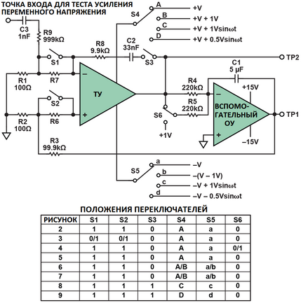
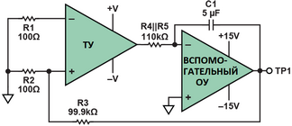
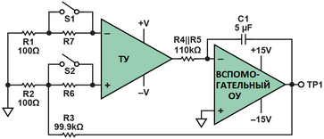
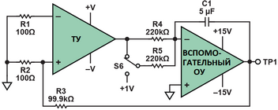
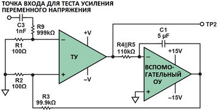
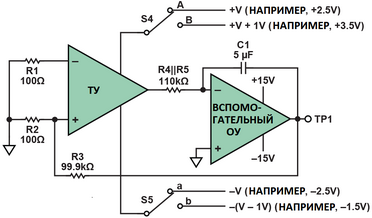
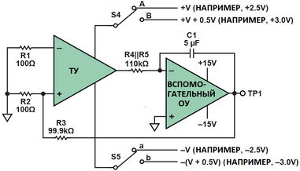
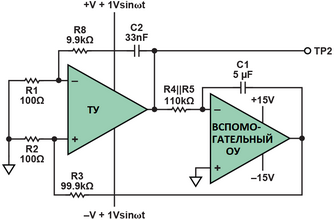
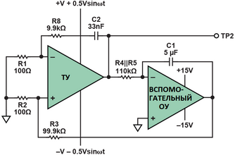

|
Simple Op Amp Measurements
By James M. Bryant
https://www.analog.com/en/analog-dialogue/articles/simple-op-amp-measurements.html
Операционные усилители (ОУ) – это усилители с очень высоким коэффициентом усиления с дифференциальными входами и несимметричными выходами. Они часто используются в высокоточных аналоговых схемах, поэтому важно измерять их характеристики точно. Но при измерениях с незамкнутой петлёй обратной связи из-за их высокого коэффициента усиления, который может достигать 107 и более, очень трудно избежать ошибок от очень малых напряжений на входе усилителя из-за наводок, блуждающих токов или эффекта Зеебека (термоэлектрический эффект).
Процесс измерения можно значительно упростить используя для создания нуля на входе усилителя следящий контур, что позволяет тестируемому усилителю по существу измерять собственные ошибки. На Рисунке 1 показана универсальная схема, которая использует этот принцип, применяя вспомогательный операционный усилитель в качестве интегратора для создания стабильного контура с очень высоким коэффициентом усиления при разомкнутой петле на постоянном токе. Переключатели облегчают выполнение различных тестов, описанных в последующих упрощенных иллюстрациях.
 Рисунок 1. Базовая схема измерения параметров операционного усилителя.
Схема на Рисунке 1 минимизирует большинство ошибок измерения и позволяет точно измерять большое количество параметров при постоянном токе и несколько параметров на переменном токе. Дополнительный "вспомогательный" операционный усилитель не должен иметь характеристики лучше, чем измеряемый операционный усилитель. Полезно, если он имеет коэффициент усиления по постоянному току при разомкнутой петле обратной связи один миллион или больше. Если смещение тестируемого устройства (ТУ) может превышать несколько мВ, вспомогательный операционный усилитель должен работать от источников питания ±15 В (и если смещение входа ТУ может превышать 10 мВ, резистор R3 99.9 кОм должен быть уменьшен).
Напряжения питания, +V и –V, ТУ имеют одинаковую величину и противоположный знак. Общее напряжение питания, разумеется, равно 2 × V. В данной схеме используются симметричные источники питания даже с операционными усилителями "с однополярным питанием", поскольку опорная точка заземления системы является средней точкой источников питания.
Вспомогательный усилитель, включенный как интегратор, работает без обратной связи (с полным коэффициентом усиления) на постоянном токе, но его входной резистор и конденсатор обратной связи ограничивают его полосу пропускания частотой в несколько Герц. Это означает, что постоянное напряжение на выходе ТУ усиливается полным коэффициентом усиления вспомогательного усилителя и подаётся через аттенюатор 1000:1 на неинвертирующий вход ТУ. Отрицательная обратная связь заставляет выход ТУ быть близким к потенциалу земли. (На самом деле фактическое напряжение – это напряжение смещения вспомогательного усилителя, или, если быть дотошным, это смещение плюс падение напряжения на резисторе 100 кОм из-за тока смещения вспомогательного усилителя, но это достаточно близко к земле, чтобы быть неважным, особенно потому, что изменения напряжения в этой точке во время измерений вряд ли превысят несколько микровольт).
Напряжение в контрольной точке TP1 в 1000 раз больше корректирующего напряжения (равного по величине ошибке), подаваемого на вход ТУ. Это напряжение будет составлять десятки мВ или больше и, следовательно, его довольно легко измерить.
Идеальный операционный усилитель имеет нулевое напряжение смещения (Vos). То есть, если оба входа соединены вместе и удерживаются при напряжении посередине между источниками питания, выходное напряжение также должно быть посередине между источниками питания. В реальной жизни у операционных усилителей смещение составляет от нескольких микровольт до нескольких милливольт, поэтому для приведения выходного напряжения к среднему потенциалу необходимо подать на его вход напряжение в этом же диапазоне.
Измерения напряжения смещения
Напряжение смещения нуля обозначается как Uсм (в отечественной литературе) или как Vos/Uio (Input Offset Voltage в зарубежных даташитах)
На Рисунке 2 показана конфигурация для самого базового теста – измерения напряжения смещения. Выходное напряжение ТУ равно потенциалу земли, когда напряжение в TP1 в 1000 раз превышает его напряжение смещения.
 Рисунок 2. Измерение напряжения смещения. Измерение тока смещения и разности токов смещения.
Ток смещения (Input Bias Current) — среднее значение токов, протекающих через оба входа ОУ. В отечественной литературе чаще используется обозначение Iсм, а в зарубежной — IB (или Iib, Ibias).
Разность токов смещения (Input Offset Current, также называемый входным током сдвига) — абсолютная разность между токами обоих входов. В отечественной документации обозначается как Id или Iсм.р, а в зарубежной — IIO (или Iio)
Идеальный операционный усилитель имеет бесконечный входной импеданс и в его входы ток не течёт. В реальности в инвертирующем и неинвертирующем входах (IB– и IB+, соответственно) протекают небольшие токи "смещения"; они могут вызвать значительные смещения в высокоомных цепях. В зависимости от типа операционного усилителя они могут составлять от нескольких фемтоампер (1 фА = 10–15 А – один электрон каждые несколько микросекунд) до нескольких наноампер, или даже в некоторых очень быстрых операционных усилителях – один или два микроампера. На Рисунке 3 показано, как эти токи можно измерить.
 Рисунок 3. Измерение тока смещения и разности токов смещения.
Схема аналогична схеме измерения напряжения смещения на Рис. 2 с добавлением двух резисторов R6 и R7 последовательно со входами ТУ. Эти резисторы могут быть замкнуты переключателями S1 и S2. Когда оба переключателя замкнуты, схема такая же, как на Рисунке 2. Когда S1 разомкнут, ток смещения с инвертирующего входа течет в RS (имеется в виду замыкаемый резистор) и разница напряжений добавляется к напряжению смещения. Измерив изменение напряжения в TP1 (= 1000 IB– × RS), мы можем рассчитать IB–. Аналогично, замкнув S1 и разомкнув S2 мы можем измерить IB+. Если напряжение в TP1 измеряется при замкнутых S1 и S2, а затем при разомкнутых S1 и S2, то по изменению измеряется "разница входных токов смещения", IOS – разница между IB+ и IB–. Используемые значения R6 и R7 будут зависеть от измеряемых токов.
Для значений IB порядка 5 пА или меньше использовать эту схему становится довольно сложно из-за большой величины резисторов. Могут потребоваться другие методы, возможно, измеряющие скорость, с которой IB заряжает конденсаторы с низкой утечкой (которые заменяют RS).
Когда S1 и S2 замкнуты, IOS всё ещё течёт в 100-омных резисторах и вносит ошибку в VOS, но если IOS не настолько велик, чтобы дать ошибку более 1% от измеренного VOS, в этом расчёте его обычно можно игнорировать.
Коэффициент усиления по постоянному току
Коэффициент усиления по постоянному току (или напряжению) в операционных усилителях (ОУ) обозначается заглавной латинской буквой K (или A). В технической документации для этого параметра используются следующие обозначения и аббревиатуры:KU — коэффициент усиления напряжения (чаще всего для идеального или реального ОУ).AVOL (или AO) — в зарубежной документации (Open-loop voltage gain) означает коэффициент усиления напряжения при разомкнутой цепи обратной связи (на постоянном токе).
Коэффициент усиления по постоянному току в разомкнутой цепи операционного усилителя может быть очень высоким. Известны коэффициенты усиления более 107, но обычно значения лежат в диапазоне от 250 000 до 2 000 000. Коэффициент усиления по постоянному току измеряется принудительным изменением выходного сигнала ТУ на известную величину (1 В на Рисунке 4, но 10 В, если устройство работает при достаточно больших напряжениях питания, чтобы позволить это) путём переключения R5 между выходом ТУ и эталонным напряжением 1 В с помощью S6. Если R5 подключён к напряжению +1 В, то выход ТУ должен сместиться на –1 В, чтобы вход вспомогательного усилителя оставался неизменным около нуля.
 Рисунок 4. Измерение коэффициента усиления по постоянному току.
Изменение напряжения в TP1, ослабленное в 1000 :1, является входом для ТУ, что вызывает изменение выходного сигнала на 1 В. Отсюда легко рассчитать коэффициент усиления (= 1000 × 1 В / TP1).
Измерение коэффициента усиления на переменном токе
Коэффициент усиления операционного усилителя (ОУ) на переменном токе обозначается латинской буквой A (иногда Au или Ku), а в англоязычной литературе — буквой G (Gain) или Av (Voltage Gain).
Ключевые параметры усиления ОУA (или Ku) — собственный коэффициент усиления дифференциального сигнала без обратной связи (разомкнутой цепи) на постоянном или низком переменном токе. Обычно составляет 10^5 - 10^6 раз (или 80 - 120 дБ).
Ad}(j\omega) — комплексный коэффициент усиления на переменном токе (зависит от частоты из-за внутренних емкостей ОУ).
Av — коэффициент усиления с замкнутой цепью обратной связи (для конкретной схемы включения, например, инвертирующего или неинвертирующего усилителя).GBW (или f1, fT) — частота единичного усиления. Это параметр, на котором коэффициент усиления ОУ падает до 1 (0 дБ).
Для измерения коэффициента усиления переменного напряжения при разомкнутой петле обратной связи необходимо подать на вход ТУ небольшой сигнал переменного напряжения нужной частоты и измерить результирующий сигнал на его выходе (TP2 на Рисунке 5). Пока это делается, вспомогательный усилитель продолжает стабилизировать средний уровень постоянного напряжения на выходе ТУ.
 Рисунок 5. Измерение коэффициента усиления на переменном токе.
На Рисунке 5 сигнал переменного тока подается на вход ТУ через аттенюатор 10 000 :1. Такое большое ослабление необходимо для низкочастотных измерений, где коэффициент усиления при разомкнутой петле обратной связи может быть близок к усилению на постоянном токе. (Например, на частоте, где коэффициент усиления равен 1 000 000, сигнал со среднеквадратичным напряжением 1 В подавался бы на вход усилителя как напряжение 100 мкВ, что приводило бы к насыщению усилителя, поскольку он попытается выдать выходной сигнал со среднеквадратичным напряжением 100 В). Поэтому измерения на переменном токе обычно проводятся на частотах от нескольких сотен Гц до частоты, на которой коэффициент усиления при разомкнутой петле обратной связи падает до единицы, или очень осторожно с более низкими амплитудами на входе, если нужны данные по коэффициенту усиления на низких частотах. Показанный простой аттенюатор будет работать только на частотах до 100 кГц или около того, даже если очень внимательно отнестись к паразитной ёмкости. На более высоких частотах потребуется более сложная схема.
Коэффициент подавления синфазного сигнала (CMRR)
Коэффициент подавления синфазного сигнала (КОСС) операционного усилителя обозначается аббревиатурой КОСС (в отечественной литературе) или CMRR (Common-Mode Rejection Ratio) в зарубежных даташитах. Этот параметр показывает, во сколько раз коэффициент усиления дифференциального сигнала больше коэффициента усиления синфазного сигнала, и обычно измеряется в децибелах (дБ).
Коэффициент подавления синфазного сигнала (CMRR) операционного усилителя – это отношение видимого изменения смещения в результате изменения напряжения синфазного сигнала к приложенному изменению напряжения синфазного сигнала. На постоянном токе он часто имеет порядок от 80 дБ до 120 дБ, но ниже на более высоких частотах.
Для измерения CMRR идеально подходит испытательная схема показанная на Рисунке 6. Напряжение синфазного сигнала подаётся не на входные клеммы ТУ, где низкоуровневые эффекты могли бы повлиять на измерения, а изменяется напряжение питания (в том же направлении, то есть синфазно относительно входа), в то время как остальная часть схемы остаётся свободной од воздействия.
 Рисунок 6. Измерение CMRR на постоянном токе.
В схеме на Рисунке 6 смещение измеряется в TP1 при питании ±V (в этом примере +2.5 В и –2.5 В) и снова при обоих питаниях, сдвинутых на +1 В до +3.5 В и –1.5 В. Изменение напряжения смещения соответствует изменению синфазного напряжения на 1 В, поэтому CMRR на постоянном токе равен отношению изменения напряжения смещения и 1 В.
Коэффициент подавления пульсация напряжения питания (PSRR)
Коэффициент подавления пульсаций (шума) напряжения питания операционного усилителя в англоязычной технической документации обозначается аббревиатурой PSRR (Power-Supply Rejection Ratio). В русскоязычной литературе также встречается обозначение КОПП (коэффициент ослабления пульсаций питания) или КВИП.Параметр измеряется в децибелах (дБ) и показывает, насколько хорошо микросхема подавляет помехи и пульсации, проникающие от источника питания на выход усилителя.
CMRR относится к изменению напряжения смещения при изменении синфазного напряжения, при этом общее напряжение питания остаётся неизменным. Коэффициент подавления пульсация напряжения питания (PSRR) с другой стороны представляет собой отношение изменения напряжения смещения к изменению общего напряжения питания, при этом напряжение синфазного сигнала остаётся неизменным в средней точке напряжения питания (Рисунок 7).
 Рисунок 7. Измерение PSRR на постоянном токе.
Используется точно такая же схема. Разница заключается в том, что изменяется общее напряжение питания, в то время как синфазное напряжение остается неизменным. Здесь происходит переключение с +2.5 В и –2.5 В на +3 В и –3 В, что означает изменение общего напряжения питания с 5 В до 6 В. Напряжение синфазного сигнала остаётся неизменным в средней точке. Расчёт тот же (1000 × TP1 / 1 В).
Измерения CMRR и PSRR на переменном токе
Для измерения CMRR и PSRR на переменном токе напряжения питания модулируются напряжениями как показано на Рисунке 8 и Рисунке 9. ТУ продолжает работать при разомкнутой петле обратной связи на постоянном токе, но значение коэффициента усиления (×100 на рисунках) определяет отрицательная обратная связь по переменному току.
 Рисунок 8. Измерение CMRR на переменном токе.
 Рисунок 9. Измерение PSRR на переменном токе.
Для измерения CMRR на переменном токе положительный и отрицательный источники питания ТУ модулируются переменным напряжением с амплитудой с пиком 1 В. Модуляция обоих источников питания имеет одинаковую фазу, так что фактически напряжение питания остаётся постоянным, но напряжение синфазного сигнала представляет собой синусоиду амплитудой 2 В пик-пик, что создаёт на выходе ТУ переменное напряжение, которое измеряется в TP2.
Если переменное напряжение в TP2 имеет амплитуду пика X вольт (2X вольт пик-пик), то CMRR, отнесённый ко входу ТУ (то есть до усиления по переменному току ×100), равен X / 100 В, а CMRR – это отношение данного значения к напряжению с пиковым напряжением 1 В.
PSRR на переменном токе измеряется при наличии противофазного переменного напряжения на положительной и отрицательной шине питания. Это приводит к модуляции амплитуды напряжения питания (опять же, в этом примере с пиковым напряжением 1 В, или 2 В пик-пик), в то время как напряжение синфазного сигнала остаётся неизменным на постоянном токе. Расчёт очень похож на предыдущий.
Заключение
Конечно, существует множество других параметров операционного усилителя, которые необходимо измерить, и множество других способов измерения тех параметров, о которых мы говорили, но самые базовые параметры постоянного и переменного тока, как мы видели, могут быть надёжно измерены с помощью простой базовой схемы, которую легко построить, легко понять и в значительной степени свободна от проблем.
Январь 2018: Мы заменили С1 = 1 мкФ на С1 = 5 мкФ. Оказалось, что интегратор на вспомогательном ОУ всё ещё имеет достаточный коэффициент усиления, чтобы создать в замкнутом контуре пик до 10 дБ на частоте около 40 Гц, создающий в итоге колебания частотой 40 Гц. Моделирование показывает, что это можно предотвратить уменьшив частоту полюса в 5 раз.
|